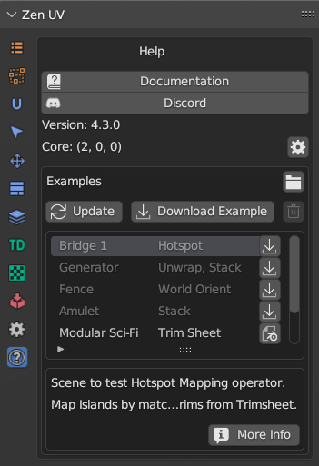

Help
Panel

Documentation
Link to the documentation of the current version.
Discord
Discord channel for user feedback, bug reports, and help with Zen UV.
Version
Current version of the Zen UV.
Core
Current version of Zen UV Core Library If Zen UV Core Library is not installed you need to follow this instruction to install it.
Examples
The examples contain scenes with examples of models and sites recommended for review. Here you can find models from Zen UV YouTube Playlist.
Subpanel

Update
Update the list of examples.
Download Example
Download selected scene.
Open
Open selected scene.
Open Website
Open selected website
Delete
Delete selected scene.
More Info
Open webpage with all the information about example.